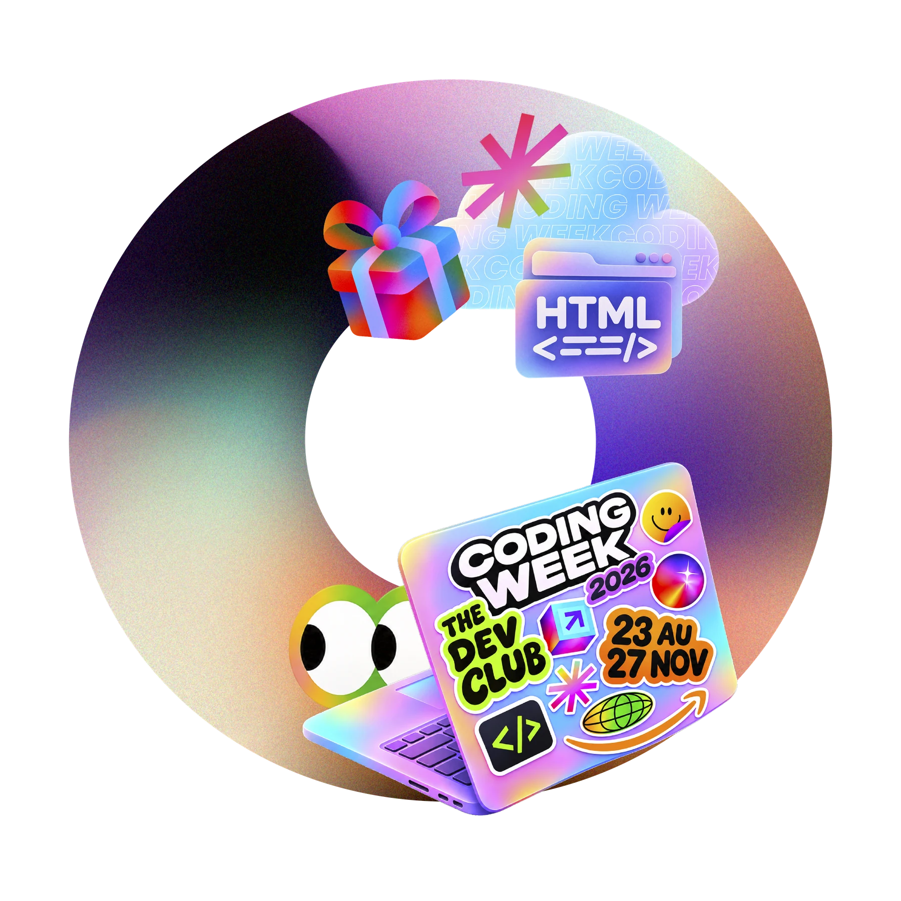

Welcome! Here's how the week will go
> You build
> You pitch!
Ask your questions in the channel, code without AI first, merge early and often!
Questions, links, news: it all goes in the bootcamp's Teams channel. Stuck? Ask there first, someone will answer.
No Assistant, no ChatGPT, no Copilot, not even on your phone. Write your first lines yourself: Tuesday's AI workshop will mean a lot more.
The main branch locks at 15:00 sharp. What's merged by then will be the subject of your pitch.
> Merge early and often!
Thursday, after the code freeze, each team picks two people to present on Friday.
Drawn at random or volunteers: your call.
Make sure every one of you can explain any line your team ships! #teamwork
Four days here, Wednesday out in Bordeaux. Every day starts at 9:00.
Kick-off
Meet your feature at 10:20, learn the GitHub flow and TDD, merge your first pull request.
Craft & AI
Save your data, build with Streamlit. At 14:00, the Assistant opens.
Out in Bordeaux
A day away from the keyboard. :)
Code Freeze and Pitch!
Code freeze at 15:00, then get your pitch ready.
Show time
Present to the jury, cheer for the finalists, and celebrate together.
Make sure you:
uv syncuv run pytestuv run streamlit run app.py